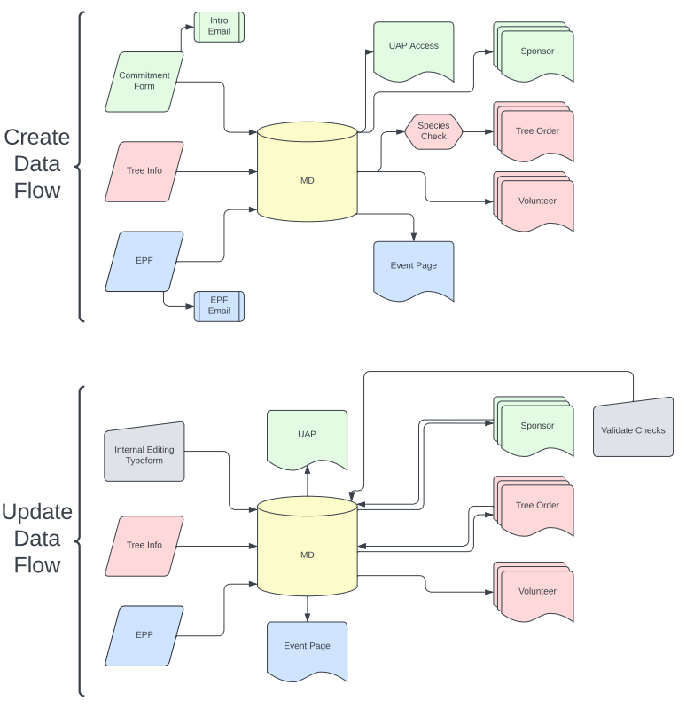

Database System & Integration Software to handle the scaling and automation of Tree-Plenish operations.
Tree-Plenish is a rapidly growing organization, going from 2 -> 87 -> 300+ events over the first three operating years. To maintain logistical and financial capabilities a centralized database system is needed. This pipeline is automated and connects Typeform Integration Software, Mentorship Communication Tools and In-House Portals.
DBD Notes:
> The PostgreSQL Database is hosted on AWS Aurora Serverless.
> The main table in the Database is the event table. This contains a single row per Tree Planting Event with any event metadata such as location, tree goal and event date.
> Other general information directly concerning the event can be found in the host table descrbing the event's leadership team. Additionally, the tree table describes the sapling species that each school offers.
> There are a couple of controlling tables tracking event progress. These are the scheduler table which records each schools milestones in the event planning process and the link table which organizes each events Typeform Links (once generated).
> There is the tree_info table, which is used as a relatively static lookup table providing species descriptions and global availability.
> Lastly there are the main data tables, which include the sponsors, tree orders, and volunteer team sign ups with any required information.
Extract:
Main Typeforms:
Global Typeforms: Commitment Form & Logistic Form
Generated Typeforms: Event Specific Sponsor, Tree Order, and Volunteer Forms
Other Forms:
Event Page Forms: Password Protected at tpeventpageform.com
Internal Forms: Tree Species Confirmation / Addition / Deletion, Check Validation, Additional Funding Form, Miscellaneous Internal Editing Form
Transform:
Pipeline Checks and Timeline Validation:
Password Verification on Protected Forms.
Repeat Submission Handling.
Control Flag Check using scheduler table.
New Submission Detection and Value Allocation:
Detecting new form submissions using global UUIDs across Typeform & Custom Input methods.
Seperating and allocating list inputs as well as dynamic submissions (e.g. host profiles).
Load:
Uploads New Entries & Updates Existing Rows to Aurora Serverless PostgreSQL Setup.
Independent of ETL Status but follows immediately in production.
Action Notes:
> Two Major action streams: Create & Update. ETL as previously described is shown in both as any Form or Database Inputs.
> Create action flow is activated when recent data is recieved indicating that a school has moved to the next phase of the event cycle.
> The main purpose of this action is to generate school specific typeforms.
> Update action flow is activated whenever recent data indicates an impactful change in existing event data.
> The main purpose of this action is to update the information present in existing typeforms as well as any live websites.
> Some examples of these updates are changing prices when an event recieves new sponsors and modifying event date & tree goal across all viewable resources.